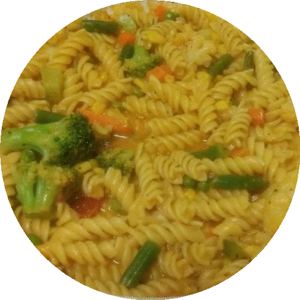

Graduate Student Recipes: Quick and Easy Pasta
Sharing successful tidbits from my reluctant adventures as a student cook. :)
Ingredients:
- Pasta — 1 cup
- Salsa sauce — 3 table spoons
- Cut up veggies — 3/5 cup
- Soy sauce — 1 tsp
- Garlic powder/paste — 1/2 tsp
- Ginger powder/paste — 1/4 tsp
- Chilli powder — 3/4 tsp
- Parmesan Cheese grated — 1/4 cup
- Mayonnaise — 1.5 tsp
- Pepper grated — 1 tsp
- Butter/ghee — 1 tsp
- Vegetable oil — 1 tsp
- Tomato sauce — 1 table spoon
- Salt — 1 tsp
- Turmeric powder — a pinch
Steps:
- Boil the pasta for about 5 minutes until semi cooked
- Boil veggies until semi cooked
- Melt butter/ghee and oil in a pan on medium flame
- Add pasta after draining water
- Add the other ingredients and wait until pasta/veggies are fully cooked
- Add water to regulate soupiness
- Remove from flame, serve hot
Tips and tricks:
- Spices vary in strength depending on brand/source, so take the values with a grain of salt, even literally :P
- If you prefer veggies to be semi cooked instead, then skip step 2. If you’re a graduate student who wanna save time, buy frozen veggies off the shelf.
- I added butter, ghee and mayo to increase calorie content, may regulate based on dietary preferences
- Mayo makes the pasta a bit creamy, if you dont like it, avoid